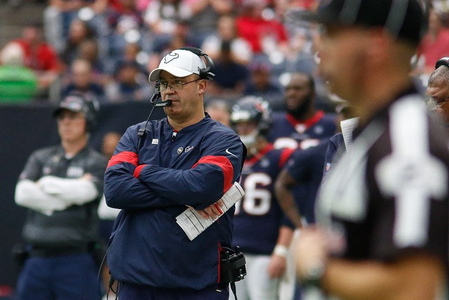

Pengen masuk unit olahraga yang gak mainstream dan beda dari yang lain?!
KUY JOIN GT!
GT atau Ganesha Touchdown adalah unit olahraga FLAG FOOTBALL di Institut Teknologi Bandung.
Hah?! Flag football, apaantuh?
Flag football adalah olahraga yang diadaptasi dari american football, bedanya di flag football kalian gaada istilah tackle atau ngejatohin lawan untuk membuat bola mati. Tackle dalam flag football diganti dengan menggunakan bendera yang harus kalian cabut dari pakaian lawan, jadi bakal lebih aman deh...
Sama seperti American Football, tim dalam flag football di GT dibagi menjadi OFFENSIVE TEAM dan DEFENSIVE TEAM. Buat lebih jelasnya yukk simak penjelasan tentang OFFENSIVE TEAM dalam flag football!!
Posisi lineman bisa diibaratkan sebagai benteng pertahanan karena memang tugasnya sama seperti benteng, yaitu untuk menghadang ancamana.
Lineman bertugas menahan dan menghadang tim defense lawan yang mencoba masuk ke pertahanan untuk mengganggu pergerakan quarterback yang akan memberikan passing menuju skilled player atau berlari untuk mencetak touchdown.
Karena tugasnya yang cukup berat, posisi lineman biasanya diisi oleh pemain dengan postur tubuh besar dan memiliki kekuatan fisik yang mumpuni. Dalam sebuah pertandingan flag football, posisi offensive lineman biasa diisi oleh 3 orang.
Buat kamu yang merasa punya badan besar, gausah malu dan minder karena merasa gacocok sama olahraga apapun, GT punya solusinya! Yuk daftar jadi lineman!!
Running Back (RB)
Kamu ngerasa lari kamu cepat?! Kamu ngerasa kamu cukup lincah?! Running back adalah posisi yang tepat buat kamu. Running back bertugas untuk berlari membawa bola sesuai instruksi QB untuk mencetak touchdown.
Selain itu, seorang RB juga harus bisa lhoo melakukan blocking kepada tim defense lawan untuk mengawal bola jika QB melakukan passing jauh menuju WR. Yukk buat kamu yang larinya gabisa santai, gabung jadi RB!
Tight End (TE)
Berada disamping dan 1 langkah dibelakang OL. Merupakan pemain serba bisa, TE harus mampu melakukan blocking untuk QB / RB dalam run play ataupun menangkap pass jarak pendek. Menjadi tight end bisa dibilang harus serba bisa dehh pokoknya...Yuk join TE!!
Wide Receiver (WR)
Spesialis dalam menangkap pass. Tugas utamanya adalah berlari sesuai rute pass yang sudah ditentukan QB dan bebas untuk menerima pass. WR juga terkadang berfungsi sebagai pengalih perhatian ataupun blocker untuk RB dalam Run play.
Seorang WR dituntut memiliki kemampuan menangkap bola dan pengelihatan yang baik. Salah satu sosok WR di NFL adalah Odell Beckham Jr. Buat kamu yang suka jadi pusat perhatian karena berhasil nangkep bola passing jauh dan sering cetak touchdown,
tunggu apalagi, kuyy join WR!
Quarter Back (QB)
Seorang Playmaker.Merupakan pemain yang menerima snap bola dari OL, dan komandan dalam Offense. QB memiliki tugas paling berat, yaitu : menentukan strategi, menempatkan pemain pada posisi yang tepat, melempar pass, memberikan bola pada RB dan
terkadang melakukan block untuk RB. QB juga harus memiliki kemampuan dalam membaca situasi yang paling baik untuk tim. Sosok QB yang melegenda di NFL salah satunya adalah Tom Brady. Nahh buat kamu yang mau belajar taktik dan punya sense yang bagus
sabii banget join jadi QB!
Team Manager

Team manager ini tugasya melakukan pencatatan stats pemain, roaster pemain dan menyediakan kebutuhan pemain saat pertandingan. Buat kamu nihh wanita-wanita muda maba ITB 2020, tetep bisaa kok join GT, kamu bakal di ajarin dari nol oleh kakak kakak GT untuk menjadi
team manager paling keceee!!